About Yogesh Gurung
You've gotta dance like there's nobody watching,
Love like you'll never be hurt,
Sing like there's nobody listening,
And live like it's heaven on earth.
--William W. Purkey
You've gotta dance like there's nobody watching, Love like you'll never be hurt, Sing like there's nobody listening, And live like it's heaven on earth.
Yogesh Gurung is freelance designer, programmer, mountaineer and full time student in KOI. He is graduating in February 2021. He loves painting, playing music, swimming, surfing and travelling
He is a cheerful and outgoing person. His freindliness behaviour and positive attitude keeps himself engaging with the friends circle. He has actively participated in the community services since his home land. He loves to organise the team and participate in the team work as both team leader and vibrant member.
As an international student
Yogesh is Nepalese and travelled overseas in the pursuit of higher education and international exposure. He is currently pursuing the Master’s degree in Information technology in the KIO (King’s Own Institute), Sydney, Australia.
As a student of IT, he always loves to learn the new updates in information technology. Starting as a developer career in the international market, he keeps himself updated in the new trend and demand in information technology.
As an adventurious career seeker
He is exploring the indepth practice and knowledge of programming languages and scripting languages. As a full stack developer, the challenges of the wide range of knowledge of the programming language framework and library is necessary. He is continuously participating in the boot camps and developer communities.
Yogesh enjoyed the adventure and expedition. He was professionally climbing and guiding the mountains in the Himalalyan. He is fond of adrenaline sports like rock climbing, mountaineering, kayaking, bungee jumping, paragliding, surfing,skydiving and sea diving.
As a responsible community member
He is also equally interested in running, swimming, football and basketball. Similarly, he also likes indoor sports like table tennis, chess and electronic games. He loves sports to keep oneself healthy and smart. Sportsmanship has developed the soft skills of politeness, ethical and fair behaviour as innate personality.
Yogesh has been sociable and contributing in the community as a responsible member of the community for a long time. He has served the socially disadvantaged people back overseas in his home land. They were both the children and elderly people who were left uncare in the street. He ran a non profit organisation to support these people and provided services to help such disadvantaged people.
Some Gallery
 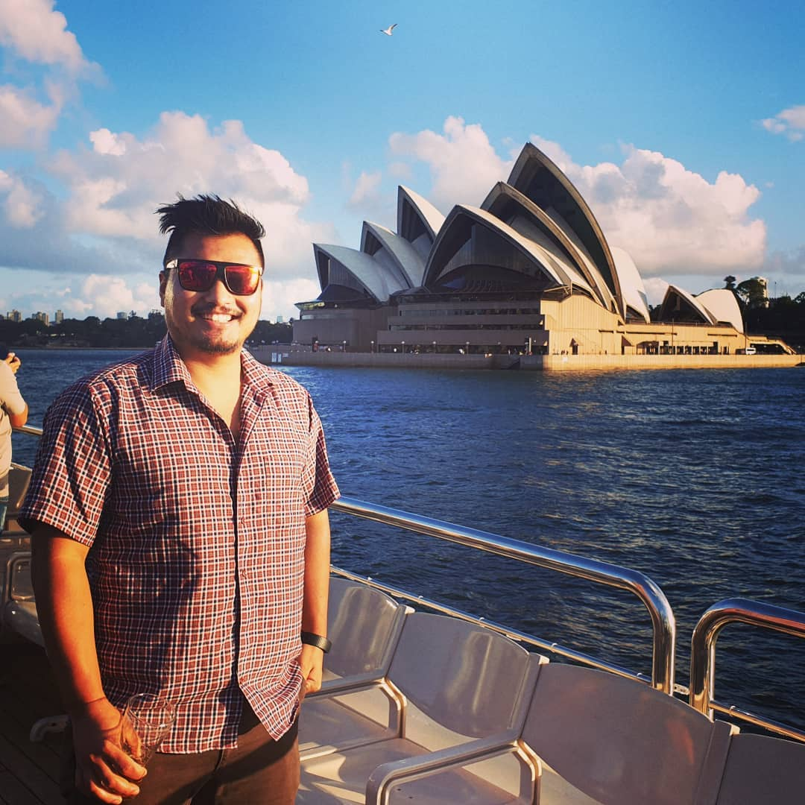
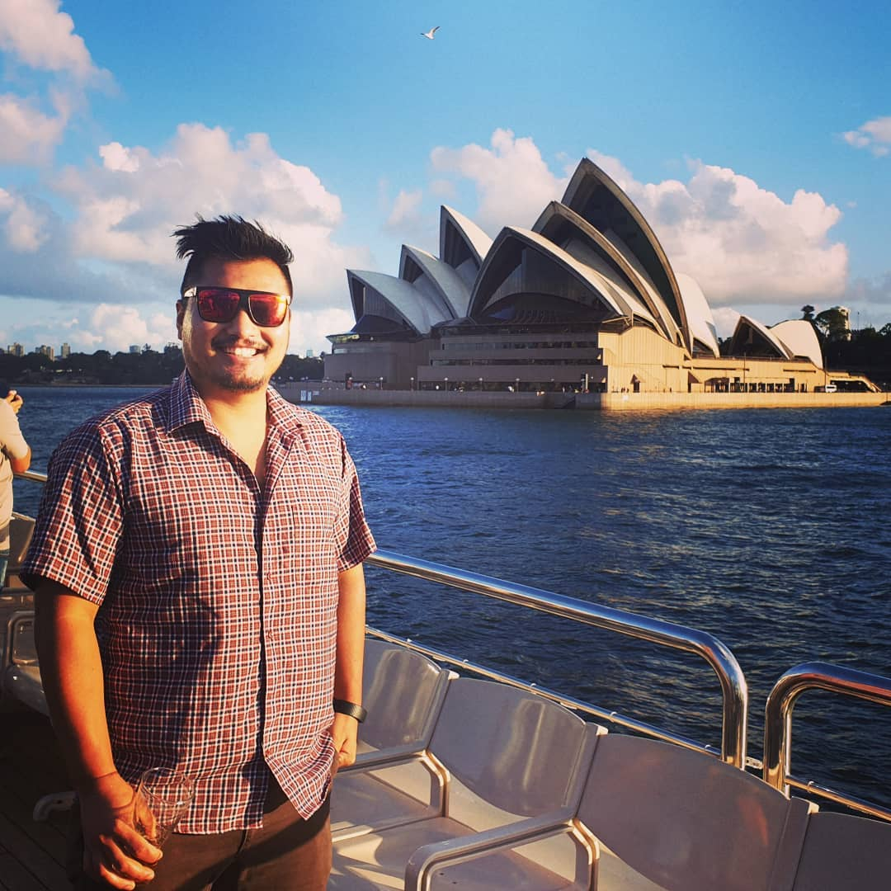
 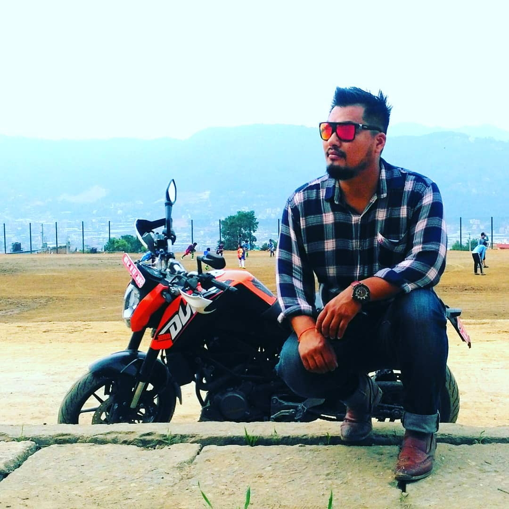
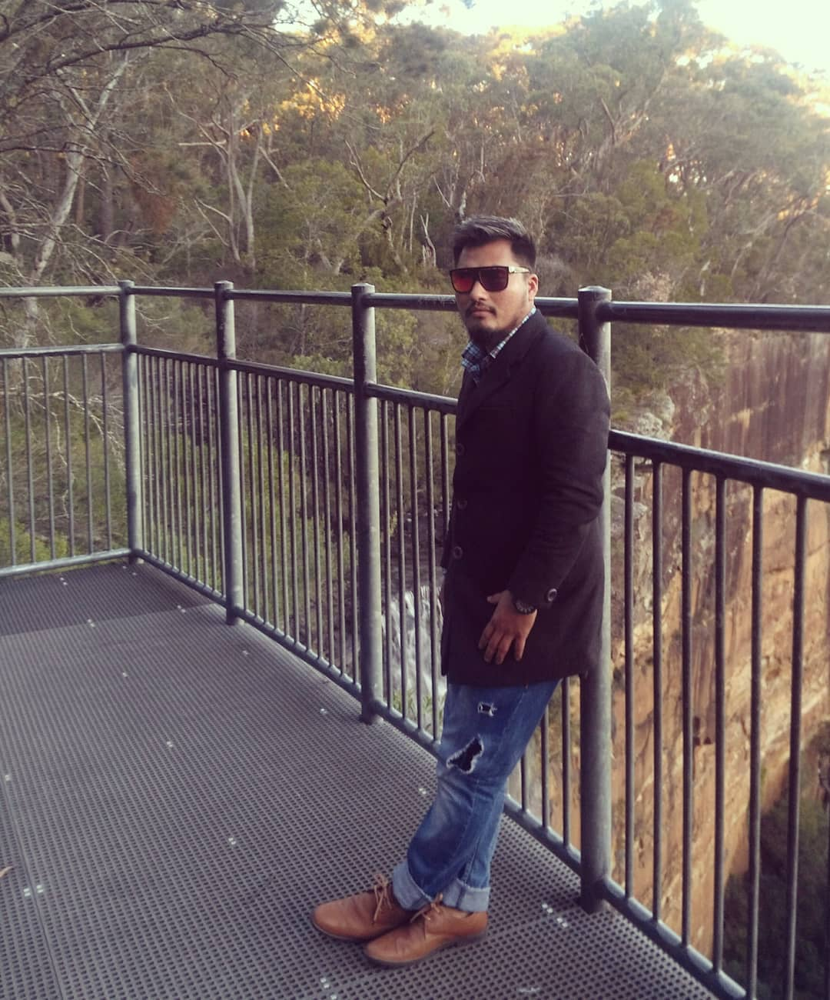
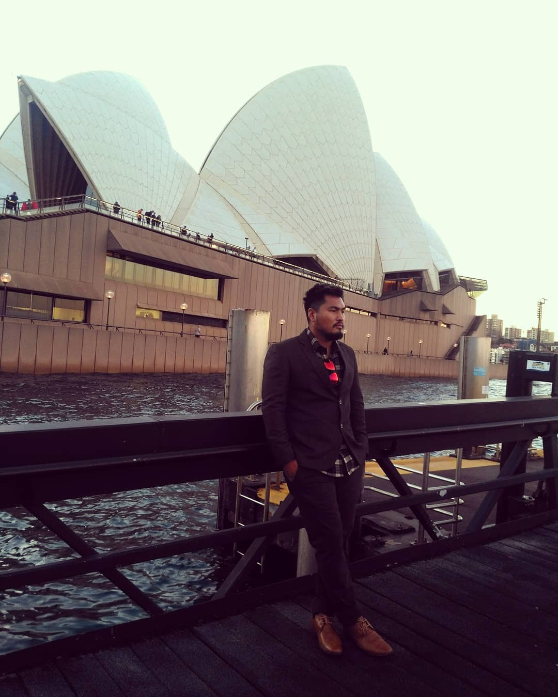
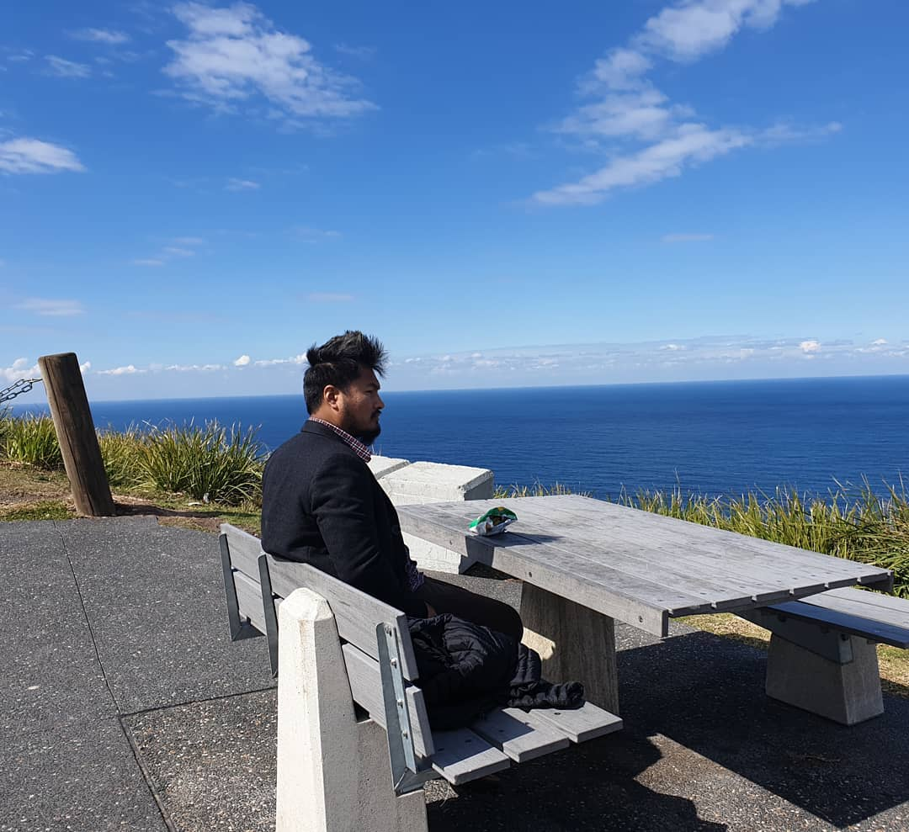
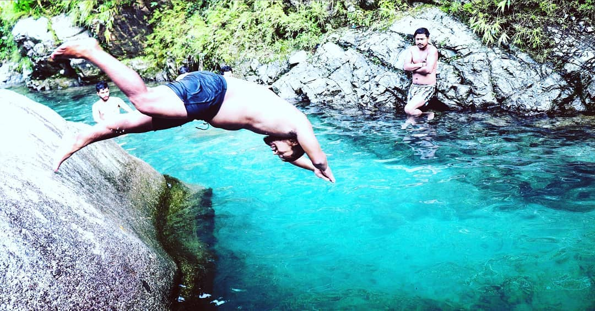
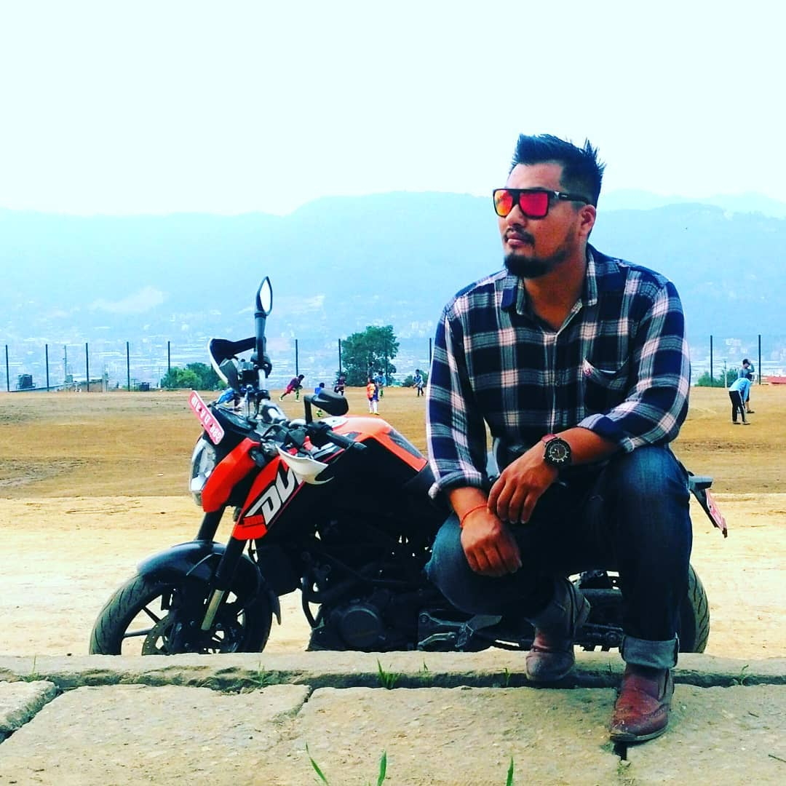
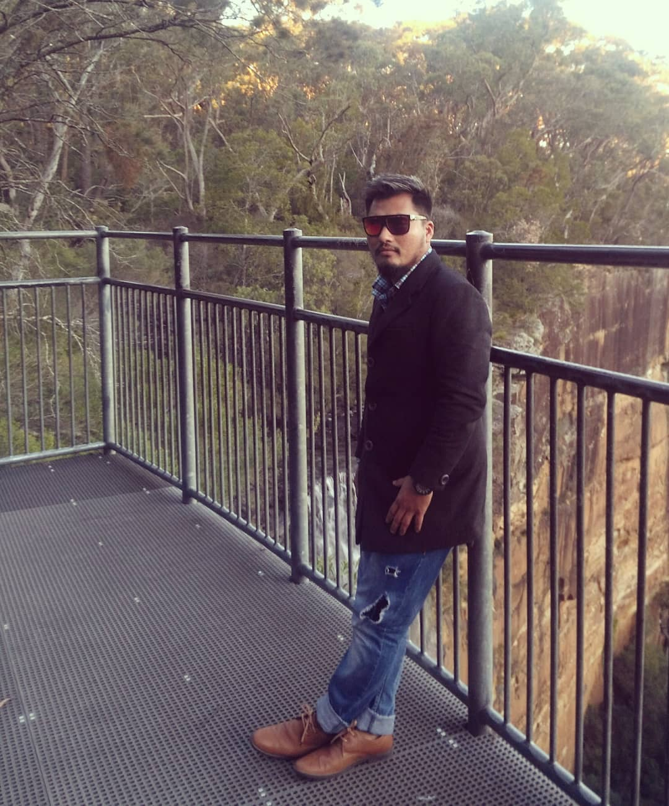
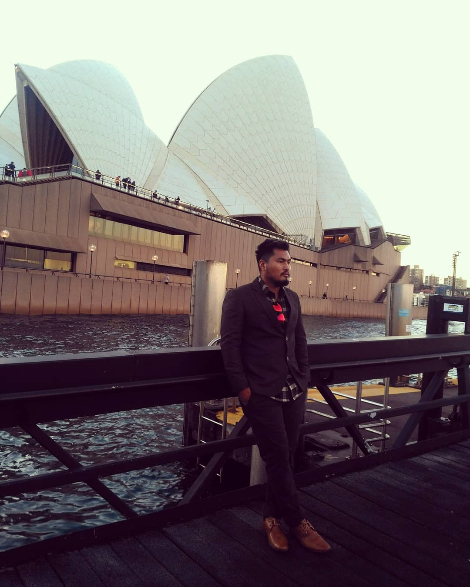
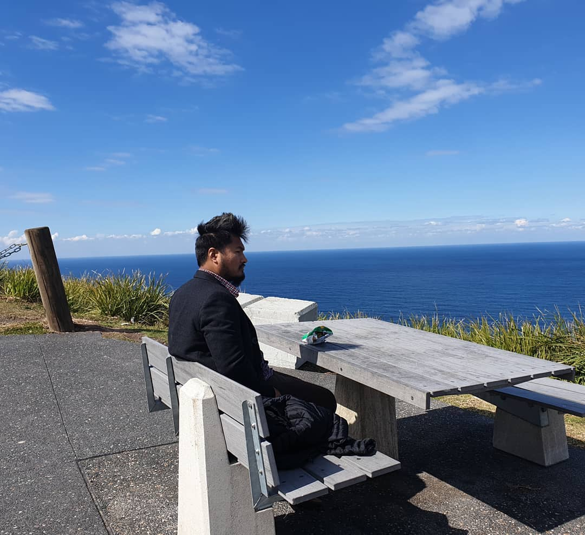
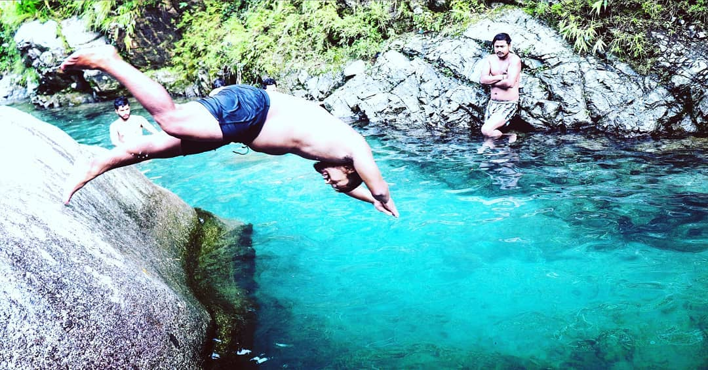